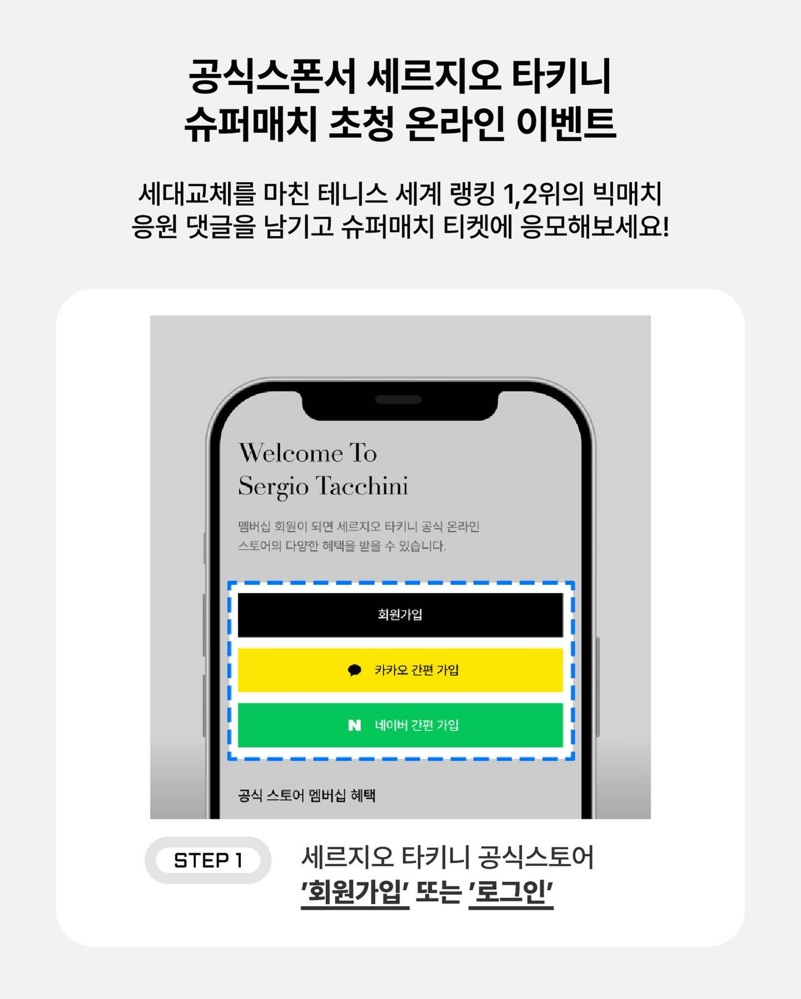

01
소비자 트렌드 기반 바이럴 전략 수립 & 실행
국내 검색량 월 1,000건 미만이었던 두 글로벌 브랜드를
트렌드 분석 기반 바이럴 구조로 검색량 281%↑ · 브랜드 매출 5배 달성
트렌드 리서치
소비자 인사이트
전략 → 실행
DUVETICA
@duveticakorea

STRATEGY
프리미엄 가치 유지, OOH + 11월 SNS 알고리즘 집중 바이럴 노출 + 타깃 커뮤니티 내 입소문 유도
EXECUTION
김지원 브랜딩 대표 인물로 활용 → 타깃 연령대에 맞는 셀럽 시딩으로 "여배우 패딩" 이미지 구축
281% 검색량 증가
5배 시즌 매출
Sergio Tacchini
@sergiotacchini_kr

STRATEGY
테니스 헤리티지 + 데일리 라이프스타일 확장 — 스포츠 감성 일상화 포지셔닝
EXECUTION
글로벌 팬 보유 셀럽 협업 → 해외 팬덤 채널 통해 바이럴 확장
캠페인 최다 버즈 리브랜딩 이후 기록
맨투맨 · 스커트 키 카테고리 메이킹
콘텐츠 제작 구조
SNS
트렌드 Ref 수집
→
AI 패턴 분석
→
브랜드 톤 적용
→
1컷 1메시지
- 매주 인스타그램/틱톡 바이럴 영상 50개 수집
- AI로 음악·전환·길이 등 공통 패턴 추출
- 브랜드 헤리티지·톤에 맞게 재해석
- 1컷 1메시지 원칙으로 핵심만 압축 → 릴스 최적화
포털 · SEO
월별 키워드 분석
→
콘텐츠 기획
→
SEO 최적화
→
검색 상위 노출
- SNS 운영과 병행하여 네이버 포털 SEO 상시 진행
- Claude AI 기반 월별 유효 키워드 자동 도출 — 검색량·포화도·계절성 배수 종합
- 시즌 이슈 반영 콘텐츠 기획 → 브랜드 검색 시 최신 콘텐츠 최상단 노출
- 성과 — 듀베티카 검색량 281% 증가 / 검색→매출 즉각 전환